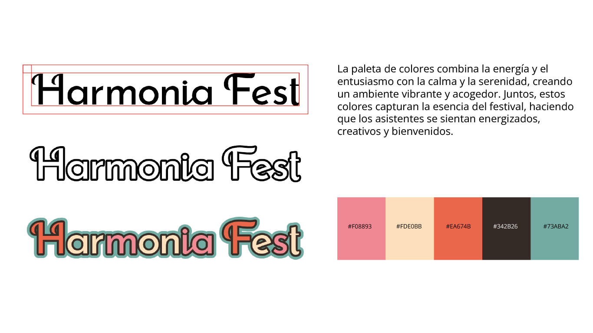
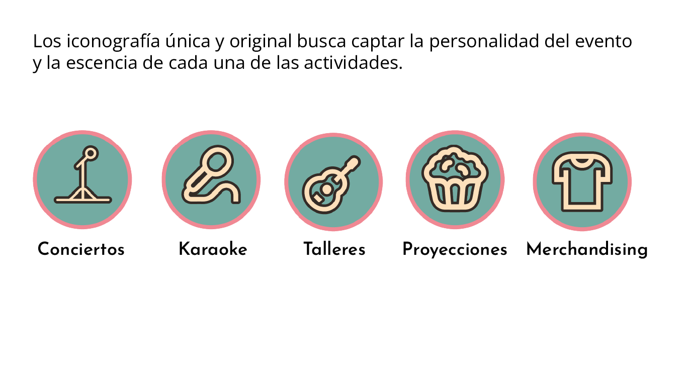
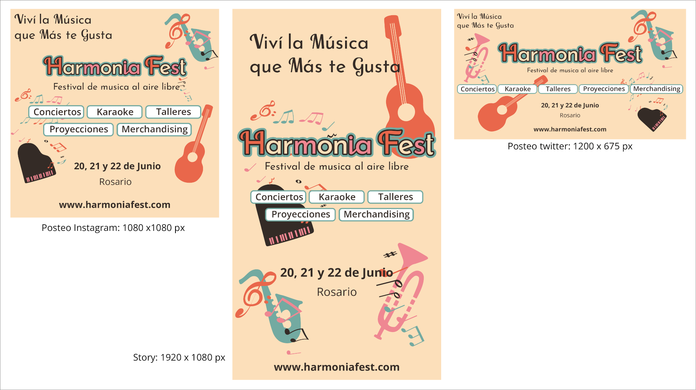
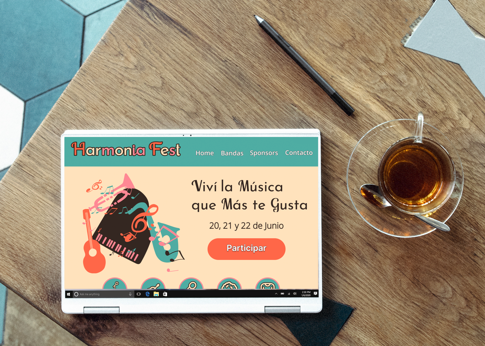
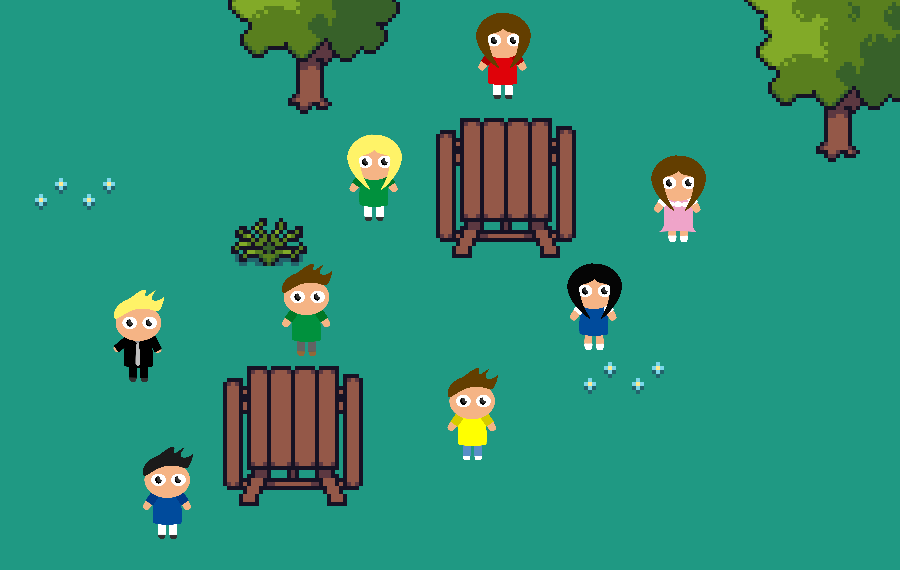

Mis trabajos
Identidad Visual - Festival musical
Desarrollo integral de la identidad visual de un festival musical ficticio. El proyecto abarcó la creación de una paleta de colores, sistema de iconografía y diferentes piezas de comunicación, incluyendo posters, flyers, publicaciones para distintas redes sociales y aplicaciones de la identidad mediante mockups.
Herramientas: Adobe Photoshop, Adobe Illustrator.






Ilustración Vectorial y Animación — Barco en el Mar
Desarrollo de una serie de composiciones vectoriales utilizando formas geométricas, colores y figuras abstractas para representar un barco y diferentes escenas marítimas. El proyecto explora el uso de la síntesis gráfica y la composición visual para comunicar una idea de manera simple y estilizada, incorporando además la animación de una de las piezas para generar movimiento y dinamismo.
Herramientas: Adobe Photoshop, Adobe Illustrator.


Infografia — Prevencion para las mascotas
Diseño de una infografía informativa enfocada en la prevención del golpe de calor en animales. El proyecto combina ilustraciones, iconografía, tipografía y una composición organizada para jerarquizar la información y facilitar su lectura. La propuesta busca comunicar recomendaciones de prevención de manera clara, visual y accesible.
Herramientas: Adobe Photoshop

Personajes 2D modulares
Diseño de personajes vectoriales 2D para un videojuego de simulación de vida. Los personajes fueron desarrollados mediante un sistema modular que permite combinar diferentes prendas, peinados y accesorios sobre una misma base, facilitando la creación de múltiples variantes visuales y personalizaciones dentro del juego.
Herramientas: Adobe Illustrator.

Cuadros vivientes
Creación de contenido audiovisual mediante inteligencia artificial para un museo interactivo. El proyecto consistió en recrear una conversacion entre dos personajes historicos mediante animaciones y recursos visuales, transformando cuadros estáticos en experiencias dinámicas e inmersivas para el público.
Herramientas: HeyGen, Canva.
Avatar Digital
Creación y animación de un avatar digital a partir de una imagen utilizando HeyGen. Se incorporó voz y sincronización labial para desarrollar un personaje virtual capaz de comunicarse de manera dinámica en contenido audiovisual.
Herramientas: HeyGen, ChatGPT.
_page-0001.jpg)
_page-0001.jpg)
_page-0001.jpg)